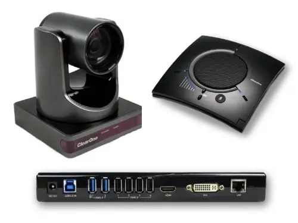

Collaborate Versa
Серия Versa – это универсальный комплект оборудования для быстрого развертывания видеоконференцсвязи на базе приложений Google Hangouts, Microsoft Lync и Skype, а также Cisco Jabber, Citrix GoToMeeting, ClearOne Spontania. Серия Versa рассчитана на использование в небольших переговорных комнатах, кабинетах руководителей и других подобных помещениях. Высокое качество изображения обеспечивается Full HD PTZ-камерой с 12-кратным зумом и автоматической фокусировкой. За четкую и разборчивую речь отвечает спикерфон, также обеспечивающий наведение камеры по голосу участника. Серия реализует возможности облачной конференцсвязи, а также совместную работу с нескольких устройств. Ключевое отличие серии Collaborate Versa – быстрое и удобное подключение с помощью USB-хаба, позволяющее установить конференцсвязь в считанные минуты.